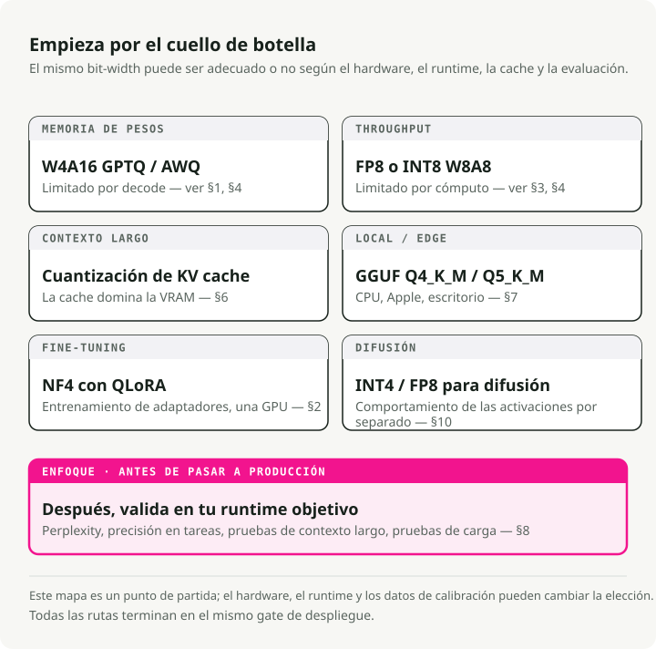
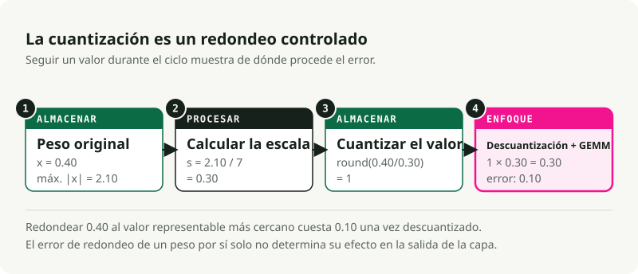
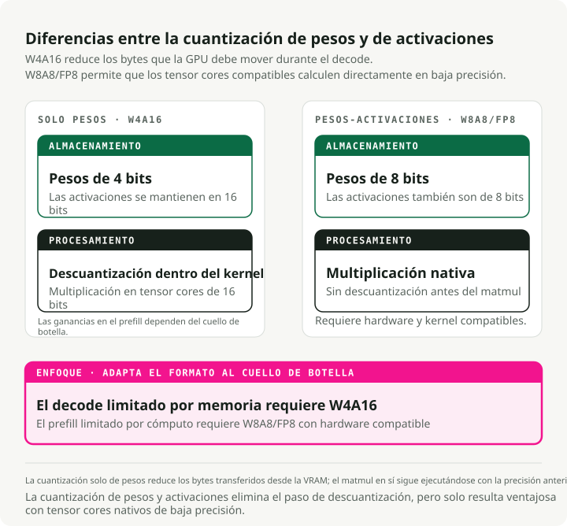
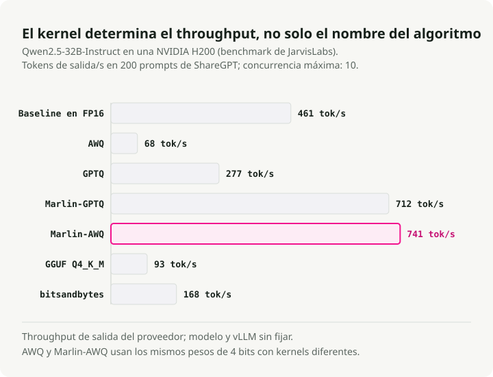
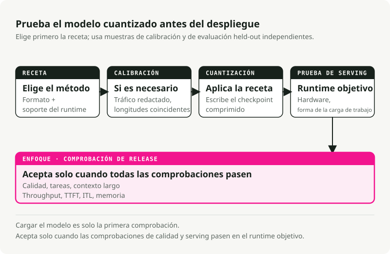

Traducción automática
Este artículo se tradujo automáticamente a partir de la versión original en inglés.
Cuantización de modelos en 2026: De los fundamentos al despliegue en producción
La cuantización rara vez es un simple botón que se pulsa para utilizar menos bits y ahorrar memoria; incluso su definición básica depende de si se está realizando una compresión pesos, activaciones o ambosEn los sistemas de servicio en producción, la cuantización requiere equilibrar memoria de pesos, cálculo de activaciones, tamaño del caché KV, kernels en tiempo de ejecución, soporte de hardware, datos de calibración y calidad. Un modelo de 4 bits podría caber en la VRAM, pero funcionaría lentamente si el kernel está mal optimizado, ya que el Prueba de rendimiento de JarvisLabs vLLM Muestra cuándo el algoritmo y el kernel difieren. FP8 es excelente en las GPU NVIDIA Hopper cuando el tiempo de ejecución y el hardware lo soportan, pero resulta inútil en hardware que no cuenta con vías nativas para núcleos de tensores FP8; TensorRT-LLM’s matriz de soporte de hardware Hace que esa dependencia sea explícita. Cuantización de la caché KV Puede ser más importante que la cuantización de peso al manejar contextos largos y alta concurrencia, ya que modifica el formato numérico utilizado para almacenar y leer los tensores clave/valor en caché.
TL;DR: Elige el cuello de botella antes de decidir la anchura de bits. Utiliza AWQ o GPTQCuando los pesos no caben en la VRAM. Utiliza FP8 W8A8 cuando se ejecutan cargas de trabajo de alto rendimiento en GPUs con soporte para FP8. Pruebe Cuantización de la caché KVCuando un contexto largo o una alta concurrencia agotan la memoria. UtilizaArchivos GGUF con codificaciones de tensores de llama.cpp como Q4_K_M, Q5_K_M o Q8_0 para la CPU local, Apple Silicon e inferencia en escritorio. Mantener NF4Principalmente para el ajuste fino al estilo QLoRA, y no como formato predeterminado para el servicio en producción.**

1. Comience por el cuello de botella
La pregunta relevante no es “¿Cuántos bits puedo eliminar?”, sino “¿Qué está limitando este trabajo actualmente?”.
Cuellos de botella comunes y sus puntos de origen:
| Si este es el problema | Comience aquí. | Herramientas típicas | Comprobar antes de desplegar |
|---|---|---|---|
| Los pesos del modelo no caben en la VRAM. | Cuantización exclusiva de peso para W4A16 | AWQ o GPTQ con llm-compressor o GPTQModel |
Perplexidad, programación, razonamiento, seguimiento de instrucciones |
| El servicio de alto rendimiento está limitado por los recursos de cómputo. | FP8 o INT8 W8A8 | FP8 PTQ SmoothQuant, TensorRT-LLM, vLLM | Rendimiento, TTFT, precisión de la tarea |
| Un contexto largo o una alta concurrencia saturan la GPU. | Cuantización de la caché KV | vLLM, TensorRT-LLM, o Cache cuantizado de Transformers | Recuperación de contexto extenso, latencia, seguridad y calidad |
| Inferencia local en CPU, Apple Silicon o equipos de escritorio | Archivos GGUF con codificaciones de tensores locales | llama.cpp, Ollama, LM Studio |
Latencia del prompt, uso de RAM, codificación del tensor seleccionado y calidad subjetiva de la salida |
| El ajuste fino del adaptador debe caber en una sola GPU. | NF4 / QLoRA | bitsandbytes, peft |
Pérdida de ajuste fino y calidad del modelo fusionado |
| El pipeline de generación de imágenes es demasiado grande o lento. | INT4 o FP8 específicos para difusión | SVDQuant, Nunchaku, torchao, NVIDIA ModelOpt |
Artefactos visuales, alineación de prompts, latencia, VRAM |
Utilice esta tabla como mapa. Las secciones siguientes explican por qué dichos puntos de partida difieren.
Algunos términos antes de las fórmulas matemáticas
- W{x}A{y} indica la precisión de las operaciones matemáticas con pesos y activaciones soportadas, generalmente los caminos GEMM en los motores de servicio. W4A16 almacena los pesos en formato de 4 bits y mantiene las activaciones con precisión de 16 bits. W8A8 utiliza pesos y activaciones de 8 bits en los caminos de cálculo soportados, pero no define automáticamente el tipo de dato de almacenamiento persistente para cada tensores en tiempo de ejecución.
- FP8, INT8, INT4, NF4 son formatos numéricos. Ellos determinan qué valores se pueden representar.
- GPTQ, AWQ, SmoothQuant, QuaRot son algoritmos. Ellos determinan cómo mapear un modelo entrenado a un formato de menor precisión.
- GGUF es un formato de archivo, no un algoritmo de cuantización. Almacena tensores además de metadatos para GGML y
llama.cpp-runtimes de estilo específico. Un archivo GGUF puede contener tipos de tensores no cuantizados comoF16,BF16, oF32, o codificaciones de tensores cuantizados y preajustes comoQ4_K_M,Q5_K_M,Q8_0,IQ*,TQ*, oMXFP4. No lo lea.GGUFcomo una receta de servicio en formato FP8 W8A8 al estilo CUDA. - Caché KV es la caché de atención que se utiliza durante la generación. Almacena las claves y valores anteriores para que el modelo no tenga que volver a calcular toda la conversación en cada token.**
- Cuantización de la caché KVAlmacena los tensores de activación clave/valor en caché en un formato de menor precisión, como FP8, INT8, INT4 o INT2, según la compatibilidad del entorno de ejecución. Esto es diferente de** cacheo de prefijos, PagedAttention, o la descarga de carga, que deciden si las entradas de caché se reutilizan, cómo se asignan o dónde se almacenan.
- GEMM significa multiplicación general de matrices. La mayor parte del tiempo de inferencia de los transformadores se destina a realizar operaciones de multiplicación matricial.
2. La cuantización es un redondeo controlado
La cuantización mapea valores de alta precisión a un conjunto más reducido de valores representables, que constituye la definición fundamental utilizada por ambos Hugging Face Optimum y TensorRT-LLM. Ahorra memoria y ancho de banda. Sin embargo, también se introducen errores de redondeo.
La cuantización de BF16 a INT4 reduce los valores disponibles a tan solo 16 intervalos discretos, y por eso los trabajos sobre arquitecturas de pocos bits como GPTQ, AWQ, y SVDQuant Invertir tanto esfuerzo en valores atípicos y en el error de reconstrucción. Si estos intervalos capturan con precisión la distribución de pesos del modelo, se ahorra memoria sin perder capacidades. Si la cuantización afecta negativamente a un canal atípico importante, el modelo pierde su capacidad de razonamiento, seguimiento de instrucciones o fidelidad visual.
Mapeo simétrico y asimétrico
Siguiendo el mapeo afín utilizado en los métodos comunes guías de cuantizaciónLa cuantización mapea un valor flotante continuo \(x \in [\beta, \alpha]\) a una cuadrícula discreta.
- \(x\) es el valor original de alta precisión.
- \(x_q\) es el valor cuantizado.
- \(s\) es la escala, o tamaño del paso.
- \(z\) es el punto cero, la ubicación entera que representa
0.0. - \([q_{\min}, q_{\max}]\) es el rango entero objetivo. Los valores con signo de 4 bits suelen utilizar \([-7, 7]\).
Cuantización simétrica: centra la cuadrícula en torno a cero y establece \(z = 0\):
Esto es compatible con el hardware, ya que los cálculos en tiempo de ejecución no requieren restar un desplazamiento de punto cero; la capa de cuantización de PyTorch expone estas opciones de escala afín y punto cero como parámetros primitivos de cuantización. torchaoCuantización asimétrica: desplaza la cuadrícula para abarcar rangos sesgados.
Dicha rejilla desplazada permite conservar mejor las activaciones exclusivamente positivas, pero el desplazamiento implica un mayor esfuerzo computacional, a menos que el kernel lo gestione de forma eficaz.

La granularidad de la escala es importante
El factor de escala puede aplicarse a todo un tensor de pesos, a un canal individual, o a un pequeño grupo de valores; Documentación del caché KV en FP8 de vLLM Se debe mantener la misma distinción entre las estrategias de escalamiento por tensor y por cabeza de atención. Los grupos más pequeños suelen conservar mejor la calidad, pero requieren almacenar más metadatos relacionados con la escalamiento.
- Escala por tensores: Utiliza un único factor de escala para toda la matriz de pesos. Es computacionalmente sencillo, pero un peso atípico en cualquier posición de la matriz distorsionará la escala entera, lo que afecta negativamente la precisión de todos los demás pesos de esa capa.
- Escala por canal: Asigna un factor de escala distinto a cada fila (canal de salida) de la matriz de pesos. Dado que las neuronas de salida tienen rangos numéricos diferentes, asignar una escala específica a cada canal evita que los rangos más estrechos pierdan precisión al intentar adaptarse a canales con valores más amplios. Este es el valor predeterminado estándar en muchos casos. Cuantización de pesos de 8 bits rutas.
- Escala por grupo (por bloques): Divide cada fila de la matriz de pesos en bloques secuenciales más pequeños, generalmente de 64 o 128 elementos, y asigna un factor de escala a cada bloque. Este enfoque es óptimo para los formatos de pesos de 4 bits, ya que permite aislar los pesos extremadamente atípicos en un pequeño grupo local (por ejemplo, como se documenta en AutoGPTQ).
group_size=128en su Ejemplos de GPTQ), manteniendo la precisión en el resto de los pesos de la capa.
Los pesos son estáticos, por lo que sus escalas pueden calcularse sin conexión antes incluso de cargar el modelo. Las activaciones cambian con cada token, lo que implica que sus rangos son impredecibles. Esto genera dos opciones para el procesamiento de activaciones:
- Escala de activación estática calcula las escalas de activación de forma offline utilizando un conjunto de datos de calibración, y posteriormente incorpora esas escalas de forma fija en el modelo. Durante la ejecución, el modelo emplea estas escalas establecidas sin necesidad de realizar cálculos adicionales. Aunque es rápido, su funcionamiento está condicionado a que los datos de calibración coincidan al cien por cien con las longitudes y distribuciones de entrada que se presentan en entornos de producción. Si una solicitud de producción genera un pico de activación fuera del rango calibrado, el modelo lo corta, lo que provoca errores en la salida.Escala dinámica de activación calcula la escala de las activaciones en tiempo real durante el paso hacia adelante, tomando en cuenta los valores reales de los tokens en ese momento concreto. Maneja perfectamente las variaciones en los prompts y detecta picos inesperados en las activaciones; no obstante, calcular el mínimo y máximo del tensor de activaciones en cada capa genera una sobrecarga de rendimiento adicional y requiere núcleos especializados y optimizados para funcionar de forma rápida.
El Caché KV se encuentra entre esos casos. Las claves y los valores son tensores de activación en tiempo de ejecución: cada capa los calcula a partir de los estados ocultos durante la pasada forward. No obstante, una vez generados, dejan de ser intermedios temporales resultantes de operaciones matriciales y se convierten en un estado persistente que el mecanismo de atención utiliza para los tokens posteriores. Un motor de servicio puede almacenar dicho estado con menor precisión y conservar los metadatos de escala junto a él, como se muestra en La caché KV cuantizada de vLLM, El caché KV en formato FP8 de TensorRT-LLM, y Cache cuantizado de Transformers. Esa elección entre almacenamiento en caché y almacenamiento tradicional es independiente de la precisión de activación utilizada dentro de los kernels lineales; por eso “cuantización del caché KV” es un término válido, pero no debe emplearse como sinónimo de toda optimización relacionada con el caché KV.
La PTQ y la QAT se realizan en fases diferentes
La cuantización posterior al entrenamiento, o PTQ, comprime un modelo entrenado posteriormente. Entrenamiento consciente de cuantización, o **QAT
| Método | Cuando se aprenden los rangos | Úsalo cuando | Coste que pagas |
|---|---|---|---|
| PTQ exclusivo de pesos | Sin conexión, para pesos estáticos | El modelo no se ajusta o su decodificación está limitada por el ancho de banda. | Las activaciones siguen ejecutándose en 16 bits. |
| PTQ estático | Sin conexión, desde los comandos de calibración | Quieres un servicio W8A8 rápido. | Los datos de calibración deben coincidir con los de producción. |
| PTQ dinámico | Tiempo de ejecución, por lote o ruta de activación | Las distribuciones de entrada varían mucho. | Trabajo adicional en tiempo de ejecución y soporte de hardware más limitado |
| QAT | Durante el entrenamiento | PTQ daña la calidad de un modelo sensible | Infraestructura completa de entrenamiento y mucho más poder de cómputo |
Los datos de calibración deben tener el mismo formato que el tráfico al que se va a servir; por ejemplo, la ruta de calibración del caché KV de vLLM utiliza un conjunto de datos cuidadosamente seleccionado. llm-compressor. Si los prompts de producción son trazas RAG largas, los párrafos cortos de Wikipedia proporcionarán números de referencia precisos, pero provocarán un despliegue defectuoso. El modelo ajustará sus escalas de activación en función de textos cortos y, al recibir prompts reales con contexto extenso, presentará patrones de activación diferentes; este riesgo también es evidente en evaluaciones de cuantización de contexto largo.
3. Los formatos numéricos determinan los requisitos de hardware
El formato numérico define qué valores puede representar el modelo en memoria, pero almacenar un formato no implica necesariamente que la GPU pueda procesarlo de forma eficiente. Una ejecución rápida requiere kernels en tiempo de ejecución y soporte hardware para esa anchura de bits y formato específicos; la documentación de TensorRT-LLM aborda ambos aspectos. lista de recetas y matriz de soporte de hardware.
| Formato | Almacenamiento por valor | Buena opción por defecto para | Punto de control principal |
|---|---|---|---|
| BF16 / FP16 | 2 bytes | Servicio compatible con inferencia de línea base y entrenamiento | Alto consumo de VRAM y alto tráfico de ancho de banda de memoria |
| FP8 | 1 byte | Servicio de alto rendimiento W8A8 en Ada, Hopper y Blackwell | Necesita núcleos de tensores FP8 nativos y soporte en tiempo de ejecución |
| INT8 | 1 byte | W8A8 en funcionamiento en hardware antiguo o que no sea de NVIDIA | Valores atípicos de activación y sensibilidad de la calibración estática |
| INT4 | 0.5 bytes | W4A16 cuando la memoria de peso es el principal límite | Pérdida de calidad en modelos más pequeños o con alto consumo de recursos computacionales |
| FP4 / NVFP4 | ~0.5 bytes | Experimentos de la época de Blackwell y rutas iniciales de servicio | Requisitos específicos del hardware para el compilador y el entorno de ejecución |
| Codificaciones y preconfiguraciones GGUF de llama.cpp | Variable | Inférencia en CPU local, Apple Silicon, equipos de escritorio y entornos perimetrales | GGUF es el contenedor; la codificación de tensores corresponde a la opción de cuantización. |
| NF4 | 0.5 bytes | Entrenamiento del adaptador QLoRA | Por lo general, se utiliza el formato de exportación incorrecto para el despliegue en producción. |
El BF16 y el FP16 utilizan ambos 16 bits, pero distribuyen la precisión de forma diferente, lo que genera modos de fallo distintos. BF16 mantiene el rango de exponente de 8 bits del FP32 y es más difícil de desbordar. FP16 cuenta con más bits en la mantisa, pero su rango de exponente es más estrecho, por lo que los picos de activación requieren mayor atención; la evaluación realizada por Kurtic y colaboradores utiliza explícitamente BF16 como línea de referencia al comparar los formatos de servido FP8, INT8 e INT4.
FP8 cuenta con dos variantes habituales. E4M3 ofrece mayor precisión y se utiliza habitualmente para los pesos y activaciones en el flujo hacia adelante. E5M2 proporciona un rango dinámico más amplio y resulta más útil para los gradientes o rutas de activación volátiles; vLLM permite acceder a ambas. Tipos de caché KV para FP8 E4M3 y E5M2. En el estudio de Kurtic y colaboradores presentado en ACL 2025, “Give Me BF16 or Give Me Death”, FP8 W8A8 es, en la práctica, sin pérdida. En la familia Llama-3.1, se han realizado más de 500,000 evaluaciones. Eso no implica que toda implementación en formato FP8 sea automática; significa simplemente que este formato resulta muy eficaz cuando la capa de servidores lo utiliza correctamente.
Blackwell incorpora formatos de microescalamiento como MXFP8 y NVFP4. En lugar de aplicar una sola escala a todo un tensores o fila, el microescalamiento emplea bloques pequeños. Explicación de NVFP4 de NVIDIA describe valores en punto flotante de 4 bits en bloques de 16, con factores de escala FP8 y un factor de escala de nivel superior para FP32. Este enfoque tiene como objetivo ofrecer un tamaño similar al de INT4 con comportamiento de punto flotante. No obstante, requiere una arquitectura de hardware, un compilador y un soporte en tiempo de ejecución compatibles, y por eso TensorRT-LLM lo enumera Soporte para FP4 y FP8 según la generación de la GPU---
4. Cuantización solo de pesos vs. cuantización de pesos y activaciones
La notación WxAy describe la precisión de los pesos y las activaciones, los cuales someten a la GPU a cargas diferentes durante la inferencia.**

Durante la fase de relleno previo, el modelo procesa la solicitud de entrada. Esta etapa suele estar limitada por cálculos intensivos, ya que la GPU realiza multiplicaciones matriciales de gran escala, y ese es el motivo por el cual Recetas W8A8 FP8/INT8 no tiene relevancia para un servicio orientado al rendimiento por volumen de datos.
Durante la decodificación, el modelo genera un token a la vez. Esta fase suele estar limitada por el ancho de banda de memoria, ya que la GPU sigue cargando pesos desde la VRAM para generar el siguiente token; los artículos que se centran únicamente en los pesos, como GPTQ y AWQ Apunta a esa presión reduciendo los bytes de peso.W4A16 comprime los pesos y mantiene las activaciones en formato BF16 o FP16. La GPU carga menos bytes de peso y, posteriormente, descuantiza dichos pesos para convertirlos a un formato de mayor precisión que se utilizará en la operación de multiplicación. Esto ayuda a solucionar problemas relacionados con la decodificación y el ajuste al espacio de memoria disponible. No acelera de forma mágica las operaciones de prellenado dependientes del cálculo, ya que las matemáticas matriciales reales siguen ejecutándose en 16 bits.
W8A8Comprime los pesos y las tensores de activación utilizados por los núcleos matmul compatibles. Si el hardware dispone de núcleos de tensores de baja precisión nativos, el motor de servicio puede realizar cálculos matriciales directamente en formato FP8 o INT8. Por eso, FP8 permite un servicio de alto rendimiento: reduce el tráfico de memoria y emplea una aritmética más rápida. No implica automáticamente que la caché KV se almacene en el mismo formato de 8 bits; hay que verificarlo en el entorno de ejecución.** tipo de datos del caché o implementación de caché por separado.
Si el modelo apenas cabe en la VRAM, comience con cuantización solo de pesos para reducir el consumo de memoria. Si el modelo cabe pero tiene dificultades con el rendimiento bajo cargas de lote elevadas, realice una evaluación. FP8 o INT8 W8A8 para acelerar la fase de cálculo. Si los problemas de memoria solo aparecen durante conversaciones largas, primero estime el término del caché KV. Si este es el factor dominante, realice pruebas Cuantización de la caché KV en lugar de comprimir aún más los pesos; si predominan los prefijos repetidos, habilitar cacheo de prefijos En su lugar.
5. Algoritmos frente a núcleos de tiempo de ejecución
Algoritmos de cuantización (como GPTQ o AWQ) define cómo se mapean los pesos del modelo a una precisión inferior. Los kernels en tiempo de ejecución (como Marlin o Los núcleos personalizados de vLLM) son el código de bajo nivel para la GPU que ejecuta la multiplicación matricial. Un modelo altamente comprimido solo funcionará a alta velocidad si existe un núcleo optimizado para su formato de cuantización específico.

El benchmark vLLM de JarvisLabs En Qwen2.5-32B-Instruct con una NVIDIA H200 se hace visible el efecto del kernel:
| Cuantización / kernel | Perplexidad: cuanto más baja, mejor. | Pass@1: cuanto mayor sea, mejor. | Rendimiento de transferencia | TTFT |
|---|---|---|---|---|
| Línea de referencia FP16 | 6.56 | 56.1% | 461 tokens/segundo | 57,7 ms |
| AWQ | 6.84 | 51.8% | 68 tok/s | 277,8 ms |
| GPTQ | 6.90 | 46.3% | 277 tokens/segundo | 107,1 ms |
| Marlin-GPTQ | 6.97 | 45.7% | 712 tok/s | 51,9 ms |
| Marlin-AWQ | 6.84 | 51.8% | 741 tokens/segundo | 73,5 ms |
| GGUF Q4_K_M | 6.74 | 51.8% | 93 tok/s | 958,0 ms |
| bitsandbytes | 6.67 | 51.8% | 168 tok/s | 135,3 ms |
No copies estos valores a tu propio entorno de desarrollo. Proceden de un modelo específico, una clase de GPU concreta y una configuración de software determinada. Estos datos reflejan un aspecto limitado: el nombre del algoritmo en el archivo de checkpoint no indica cuán rápida será la prestación del servicio.
Por ejemplo, AWQ Y tanto Marlin como AWQ utilizan los mismos pesos de 4 bits. El Marlin La implementación es mucho más rápida porque su núcleo CUDA fusiona la descuantización y la multiplicación de matrices en una única operación en GPU altamente optimizada.
Realice pruebas de rendimiento de la versión base y de las variantes comprimidas con el mismo conjunto de prompts y utilizando la misma herramienta, por ejemplo: vllm bench serve:
vllm bench serve \
--model ./outputs/Qwen2.5-32B-Instruct-AWQ-W4A16 \
--dataset-name sharegpt \
--num-prompts 200 \
--input-len 1024 \
--output-len 256
Monitorea el rendimiento general, el TTFT, la latencia entre tokens, el uso de memoria y la calidad de las tareas. Si alguno de estos valores muestra una tendencia opuesta, significa que la prueba de rendimiento está cumpliendo su función.
El menú de algoritmos
Utiliza esta tabla como referencia, no como clasificación:
| Algoritmo | Formato común | Qué intenta preservar | Coste principal |
|---|---|---|---|
| GPTQ | W4A16 | Reconstrucción por capas mediante estimaciones de Hessian | Calibración lenta y procesamiento más complejo |
| AWQ | W4A16 / W4A8 | Canales de activación importantes | Necesita calibración y núcleos de servicio fusionados. |
| SmoothQuant | W8A8 | Comportamiento de la activación INT8 al trasladar la escala de valores atípicos a los pesos | Ajuste de escala por modelo |
| QuaRot / SpinQuant | Reducir la presión de valores atípicos de activación mediante rotaciones | Complejidad de rotación en tiempo de ejecución | |
| HQQ | Compresión rápida basada únicamente en pesos, sin calibración | La calidad requiere comprobaciones posteriores a niveles de ancho de bits muy bajos. | |
| QLoRA (NF4) | NF4 | Memoria de entrenamiento del adaptador | No es una opción predeterminada muy adecuada para el servicio. |
| llama.cpp GGUF: cuantización K / cuantización IQ | Codificaciones mixtas de tensores de bajo número de bits | Calidad de inferencia local por byte | No está diseñado para el procesamiento por lotes en la nube. |
La cadena de herramientas está evolucionando de forma activa. AutoGPTQ fue Archivado en abril de 2025, y AutoAWQ fue Archivado y oficialmente obsoleto en mayo de 2025.. Para nuevos proyectos, comience por llm-compressor para compressed-tensors puntos de control consumidos por vLLM, o GPTQModel cuando necesites la ruta activa de GPTQ con Marlin, MacheteLas opciones de memoria MoE y la descarga a disco.
Es importante establecer un límite antes de salir del menú de algoritmos: el podado y la destilación también reducen el costo de servicio, pero no se trata de formatos de cuantización. 2:4 esparsidad estructurada elimina los pesos según un patrón que los núcleos de tensores dispersos de NVIDIA pueden utilizar. DestilaciónEntrena un modelo estudiante más pequeño para que imite a uno de mayor tamaño, lo cual puede ser eficaz para tareas específicas. Ambos enfoques requieren sus propios flujos de trabajo de entrenamiento o poda, por lo que no deben incluirse en la lista de opciones de cuantización a menos que realmente se pretenda realizar dicho trabajo adicional.**
6. La memoria de servicio es más que los pesos
Al planificar los requisitos de hardware, recuerda que el punto de control comprimido solo representa una parte del consumo de memoria. No lo consideres como otra opción de cuantización. Úsalo como una verificación de dimensiones que te indique si la cuantización de pesos es suficiente; PagedAttention Planteó la caché KV como un componente fundamental del espacio de memoria dedicado al servicio, y no como un mero detalle de implementación secundario.
La cuantización sin conexión puede estar limitada por capa. Herramientas como llm-compressor Se puede cargar un bloque del transformador, ejecutar los cálculos de calibración y cuantización, escribir el bloque comprimido y pasar al siguiente paso. De este modo, la memoria máxima de la GPU se mantiene cerca del tamaño de la capa activa más grande, más los buffers de calibración. Aún se necesita RAM de CPU y espacio en disco para el checkpoint de origen, pero la GPU no tiene por qué almacenar siempre el modelo completo en formato BF16.
La memoria máxima de la GPU durante la cuantización fuera de línea suele ser aproximadamente la siguiente:
En cuanto al servicio, las exigencias son más estrictas. Todo el checkpoint comprimido debe permanecer en memoria junto con el caché KV y los buffers de tiempo de ejecución. La caché KV crece con la longitud del contexto y el tamaño del lote activo.$$ \text{Cache KV (bytes)} = 2 \times L \times H{\text{kv}} \times D \times S}} \times B_{\text{batch}} \times \text{BytesPorValor
$$
Donde:
- \(L\) representa la cantidad de capas.
- \(H_{\text{kv}}\) es el número de cabezas de atención clave-valor. Atención en consultas agrupadas Reduce esto al permitir que varios heads de consulta compartan un número menor de heads KV.
- \(D\) es la dimensión de cada head, generalmente 128 o 256.
- \(S_{\text{ctx}}\) corresponde a los tokens del prompt más los tokens generados.
- \(B_{\text{batch}}\) representa el lote en servicio activo.
- \(\text{BytesPerValue}\) es 2 para BF16 o FP16 y 1 para FP8 o INT8; en vLLM’s Modo de caché KV en FP8 Es el ejemplo de stack de servidores que utiliza este artículo.
La cuantización de KV-cache existe, pero es algo distinto a la reutilización de caché.
Sí, la caché KV puede cuantizarse durante la inferencia. Cada paso de decodificación genera tensores de activación K y V para el nuevo token. Un modelo W8A8 ya puede utilizar FP8 o INT8 para las operaciones matemáticas de proyección soportadas, pero la caché es un objeto de almacenamiento independiente: muchas arquitecturas de servidores la mantienen en el tipo de dato del modelo/caché a menos que se active una tipo de dato de caché KV, utilice un punto de control con escalas de caché, o elija uno implementación de caché cuantizada. Cuando está habilitada la cuantización de la caché KV, el motor escribe las entradas de caché como una representación de menor precisión junto con escalares. Posteriormente, las operaciones de atención leen dicha caché de menor precisión y ya sea que realicen la decuantización dentro del núcleo de atención o, en el caso de algunos backends, ejecuten partes de la atención en el dominio cuantizado.
Documentación del caché KV cuantizado y estable de vLLM exponer esto directamente con kv_cache_dtype="fp8" o --kv-cache-dtype fp8. vLLM admite los formatos de caché FP8 E4M3 y E5M2, estrategias de escalamiento por tensor y por cabeza de atención, y tres vías de escalamiento: escalas predeterminadas, estimación de escalamiento durante el período de calentamiento, y calibración del conjunto de datos mediante llm-compressor. Con FlashAttention 3vLLM también puede ejecutar operaciones de atención en el dominio FP8 al cuantificar las consultas, además de las claves y los valores.
TensorRT-LLM expone la caché KV en formato FP8 a través de KvCacheConfig(dtype='fp8') Y se enumeran la caché KV de FP8 y la caché KV de NVFP4 como métodos de cuantización independientes de la cuantización de pesos y activaciones. Hugging Face Transformers también cuenta con QuantizedCache ruta a través de cache_implementation="quantized", con hqq soportando los formatos de caché int2, int4 e int8 quanto Soporta int2 e int4.
No obstante, la cuantización del caché KV no es lo mismo que el caché KV habitual. El caché KV tradicional almacena claves y valores anteriores para evitar volver a calcularlos. Caché de prefijos Reutiliza los bloques de caché en solicitudes con el mismo prefijo. PagedAttention Reduce la fragmentación y mejora la asignación de memoria. La descarga de datos KV permite mover bloques de caché entre los diferentes niveles de memoria. Se trata de técnicas de gestión de caché que pueden combinarse con la cuantización, pero no constituyen en sí mismas una forma de cuantización.
El riesgo relacionado con la calidad también difiere del PTQ basado únicamente en los pesos. La cuantización del caché KV introduce errores en el estado de atención que se lee en cada paso posterior de decodificación, por lo que la recuperación de contextos largos, el comportamiento en múltiples turnos, las funciones de seguridad/rechazo, el formato de uso de herramientas y la latencia de salida requieren pruebas separadas. KVQuant, KIVI, y el vLLM: estudio del caché KV en formato FP8 Todos consideran la cuantización de la caché KV como un problema independiente.
En el caso de un modelo de 70 mil millones de parámetros que gestiona un contexto de 32 mil tokens, la caché KV puede ser más grande que los ahorros en peso que se obtienen con otra ronda de compresión de pesos. En esta situación, es necesario realizar pruebas. Cuantización de la caché KV en FP8 es más útil que forzar los pesos a un formato más reducido.
7. El hardware limita las opciones disponibles
Es sencillo estimar el consumo de memoria en función del número de parámetros y de la precisión de almacenamiento, siguiendo el mismo criterio de dimensionado utilizado en Discusiones sobre memoria de servicio relacionadas con el caché KV:
$$
\text{Tamaño del peso (GB)} \approx \frac{\text{Número de parámetros (B)} \times \text{Bits}}{8}
$$
| Tamaño del modelo | Pesos en formato BF16 | Pesos en formato FP8 / INT8 | Pesos INT4 |
|---|---|---|---|
| 7B / 8B | ~14-16 GB | ~7-8 GB | ~3,5-4 GB |
| 14B | ~28 GB | ~14 GB | ~7 GB |
| 32B / 34B | ~64-68 GB | ~32-34 GB | ~16-17 GB |
| 70B | ~140 GB | ~70 GB | ~35 GB |
| 109B MoE | ~218 GB en total | ~109 GB | ~55 GB |
Los modelos de mezcla de expertos pueden activar menos parámetros por token, pero el conjunto completo de pesos sigue necesitando almacenarse en algún lugar, a menos que el entorno de ejecución soporte la descarga externa; la matriz de soporte para cuantización de TensorRT-LLM trata Familias de modelos MoE como objetivos de despliegue con sus propias recetas compatibles.
El hardware de despliegue restringe los formatos de cuantización que son viables:
- CPU: el rendimiento de los servicios depende de instrucciones vectoriales como AVX-512 o AMX. A GGUF archivo cargado a través de
llama.cppEs el enfoque práctico. - Apple Silicon utiliza memoria unificada, por lo que los modelos locales pueden acceder a un gran conjunto compartido de RAM en lugar de VRAM dedicada; GGUF y
llama.cppsigue siendo la ruta típica del entorno de ejecución local porque GGUF está diseñado para ejecutadores GGML. - NVIDIA Ampere admite rutas de procesamiento con núcleos de tensores en formato INT8, pero no incluye operaciones matemáticas nativas en formato FP8 W8A8 con núcleos de tensores. Las opciones más habituales son la cuantización exclusiva de pesos en W4A16 o el formato INT8 estático, que se ajustan al Matriz de compatibilidad de hardware para TensorRT-LLM.
- NVIDIA Ada y Hopper admiten rutas de servicio en FP8 en TensorRT-LLM. FP8 W8A8 Vale la pena probar el rendimiento en estas GPU.
- NVIDIA Blackwell añade NVFP4 y soporte para microescalamiento, pero la ruta del software sigue siendo importante. Considere las pilas de punto flotante de pocos bits en las fases iniciales como sensibles a la versión.
8. Calibración y evaluación antes del despliegue
No envíe el modelo cuantizado solo porque se carga. Úselo una vez que haya superado las pruebas de calidad y rendimiento para su carga de trabajo; las evaluaciones recientes de cuantización muestran resultados diferentes para Servicio de LLM, tareas de contexto largo, y modelos con alto grado de razonamiento.

Para la calibración, utilice prompts que se asemejen a los de producción:
- Incluir rastros de RAG, consultas SQL, historiales de agentes, tareas de código, cargas de trabajo de llamadas a herramientas y prompts del sistema provenientes de la carga de trabajo objetivo. PTQ estático Depende de que los datos de calibración coincidan con la distribución de producción.
– Alinear las longitudes de secuencia. Las solicitudes cortas de un solo paso no permitirán detectarlo. comportamiento de activación en contexto largo- Mantener
embed_tokensylm_headcon mayor precisión, si el método o el entorno de ejecución lo permiten; un patrón de exclusión común en Recetas de compresión para LLM. - Utilice una cantidad suficiente de muestras para estabilizar los rangos de activación. En la práctica, 128 a 512 prompts representativos Es un punto de partida habitual para flujos de trabajo de tipo calibración. Redacte los secretos y los datos privados de los usuarios antes de utilizar los registros de producción.
Para la evaluación, pruebe tanto la calidad del lenguaje como el comportamiento de servicio:
- La perplejidad en un corpus estándar permite detectar una degradación general del lenguaje, pero el Prueba de rendimiento de JarvisLabs Es un recordatorio útil de que la perplejidad y el rendimiento pueden evolucionar de manera distinta.
- Las tareas específicas del dominio detectan los fallos que la perplejidad oculta. Úselas. HumanEval para la programación, MMLU para adquirir un conocimiento amplio, y AIME o MATH-500 Para el razonamiento matemático cuando esos dominios son relevantes.
- Las verificaciones de formato son cruciales en los sistemas agentes. Se debe probar la conformidad con el esquema JSON, la salida en Markdown, la estructura de las llamadas a herramientas y el comportamiento de rechazo, ya que las evaluaciones de modelos cuantizados pueden pasar por alto fallos a nivel de aplicación incluso cuando La precisión del benchmark de agregación parece estable..
- Las pruebas de contexto largo detectan los daños causados por la cuantización de la caché KV. Aunque el método de “aguja en un pajar” es rudimentario, resultados de cuantización de contexto largo Mostrar por qué esas comprobaciones deben incluirse en la puerta de despliegue.
Los tests de carga deben informar sobre el ancho de banda, el TTFT, la latencia entre tokens, la capacidad máxima del lote y la memoria máxima; vLLM expone esta información a través de
vllm bench serveEvalúe de forma rigurosa los modelos que requieren un alto nivel de razonamiento. La cuantización sub-4 bits o W4A4 sin rotación puede perjudicar la precisión en el razonamiento, incluso cuando la perplejidad de referencia parezca estable; este es el aviso fundamental al respecto. Estudio de modelos de razonamiento cuantizados.
9. Flujo de trabajo del repositorio complementario
El repositorio complementario, slavadubrov/demo-de-compresión-de-modelos, tiene como objetivo hacer que el proceso de toma de decisiones sea reproducible. Utiliza uv y se centra en la planificación, las recetas, las pruebas preliminares y las configuraciones de referencia basadas en las mismas fuentes que se utilizan aquí: vLLM, Compresor de LLM, TensorRT-LLM, y los artículos sobre algoritmos.
Clónalo e inspecciona los algoritmos soportados:
git clone https://github.com/slavadubrov/model-compression-demo.git
cd model-compression-demo
uv run python demo.py list-algorithms
Comience por la planificación y el dimensionado:
uv run python demo.py plan \
--model-preset llama3-8b \
--goal fit-memory \
--hardware ampere \
--context 4096 \
--concurrency 4
uv run python demo.py estimate \
--model-preset llama3-8b \
--scheme w4a16 \
--context 8192 \
--concurrency 8
Seguidamente, genera la receta y realiza una prueba de calibración antes de invertir tiempo de GPU:
uv run python demo.py recipe --algorithm gptq-w4a16
uv run python demo.py quantize \
--algorithm gptq-w4a16 \
--model Qwen/Qwen3-0.6B \
--calibration-file examples/representative_calibration.jsonl \
--text-column text \
--dry-run
Para el despliegue y la planificación de pruebas de rendimiento:
uv run python demo.py serve-command \
--algorithm fp8-dynamic \
--fp8-kv-cache \
--enable-prefix-caching
uv run python demo.py benchmark-plan \
--model Qwen/Qwen2.5-32B-Instruct \
--algorithms gptq-w4a16,awq-w4a16,bnb-nf4,gguf-q4 \
--dataset-name sharegpt \
--num-prompts 200 \
--input-len 1024 \
--output-len 256 \
--output-json reports/quantization-benchmark-plan.json
Finalmente, compare los modelos base y comprimidos con umbrales explícitos:
uv run python demo.py quality-eval \
--base-model Qwen/Qwen3-0.6B \
--compressed-model outputs/Qwen3-0.6B-W4A16 \
--mode all \
--lm-eval-task hellaswag \
--lm-eval-limit 50 \
--max-perplexity-delta-pct 5 \
--max-task-regression 0.02 \
--output-json reports/qwen3-0.6b-w4a16-quality.json
Ejecuta el trabajo en orden: planifica el objetivo, estima la memoria necesaria, realiza un prueba sin ejecutar realmente la receta, mide el rendimiento al servir, y luego compara la calidad con los umbrales establecidos. Dicha secuencia refleja la separación que se hace en este artículo entre tamaño de la memoria, medición de rendimiento en tiempo de ejecución, y evaluación de calidad.
10. Los modelos de difusión necesitan una ruta separada
Las reglas de cuantización de LLM no se aplican de forma directa a los pipelines de difusión ni a los basados en diffusion-transformer; SVDQuant trata la cuantización por difusión como un problema independiente de activaciones atípicas, en lugar de una copia directa de la PTQ basada únicamente en pesos de LLM.
Los LLMs autoregresivos generan un token a la vez. Los modelos de difusión ejecutan pasos repetidos de desenfoque, y sus distribuciones de activaciones cambian durante el proceso. Aplicar un proceso estándar de cuantización de 4 bits a los LLMs en modelos de difusión suele ahorrar memoria, pero introduce graves artefactos visuales; por esta razón, existen métodos orientados a la difusión como SVDQuant / Nunchaku y Nivel de cuantización por difusión de NVIDIA ModelOpt Existe.
Utilice un plan a nivel de componente:
- Mantenga la VAE en 16 bits. Los pequeños errores en esta etapa pueden generar bandas de color, ruido o una estructura de imagen dañada; por lo tanto, los flujos de trabajo de difusión deben preservar los componentes sensibles, a menos que exista un método que los valide explícitamente.
- Cuantifique primero el backbone DiT o U-Net, ya que suele contener la mayor proporción de parámetros, siguiendo el enfoque a nivel de componente utilizado por Métodos de cuantización por difusión3. Trate los codificadores de texto por separado. La cuantización de T5-XXL o CLIP puede dañar la alineación de los prompts y la renderización del texto, por lo que conviene evaluarlos como componentes independientes en lugar de como bloques transformadores genéricos.
- Utilice métodos sensibles a la difusión como SVDQuantCuando los valores atípicos de activación son el problema principal.**
- Realice la evaluación con imágenes, y no con métricas basadas en texto. Verifique el cumplimiento de los prompts, la renderización del texto, los tonos de piel, el equilibrio de colores, los detalles finos, la latencia y la VRAM.
Si el conjunto de evaluación solo contiene prompts simples o muy comunes, pasarará por alto los fallos en casos límite. Incluya casos difíciles: texto pequeño, manos, objetos repetidos, diseños estructurados y prompts con restricciones negativas, ya que los fallos en la cuantización de difusión se manifiestan visualmente y no en perplejidad del modelo de lenguaje.
11. Valores predeterminados en producción
Para el servicio de LLM empresarial, comience con un Linea de referencia BF16 en el motor de servidores exacto que planeas utilizar. Si el objetivo es el rendimiento y el hardware lo permite, realiza pruebas. FP8 W8A8. Si el modelo no encaja, realice pruebas. AWQ o GPTQ W4A16 con Núcleos de la clase Marlin. Si el problema es un contexto largo o la concurrencia, realice pruebas Cuantización de la caché KV en FP8. Si los prefijos repetidos son el problema, también habilítelo cacheo de prefijos. Envíe solo la versión comprimida cuando tanto los parámetros de calidad como los de rendimiento superen los criterios establecidos.
Para la inferencia local y en el edge, comience con una GGUF Utiliza el archivo con Q4_K_M o Q5_K_M. Cambia a un formato Q8_0 GGUF cuando la memoria lo permita y la calidad sea más importante que el tamaño del archivo. Descender a menos de 4 bits es una última opción, no la predeterminada.
Para el afinamiento, utiliza NF4 con QLoRA para entrenar adaptadores de forma económica. Evalúa el adaptador en la aplicación antes de fusionarlo. Una vez fusionado, exporta el resultado al artefacto de servicio que realmente necesitas: un llama.cpparchivo GGUF compatible, un AWQ/GPTQ/compressed-tensors punto de control, un punto de control de servicio en formato FP8 o en formato BF16.
Para la difusión, mantén segura la VAE, cuantifica primero la estructura principal y evalúa el resultado visualmente. La perplejidad textual no te indicará si un pipeline de imágenes ha fallado, por lo que utiliza evidencias específicas de la difusión como SVDQuant y evaluación visual.
Conclusiones clave
- La cuantización combina redondeo controlado con ejecución en tiempo de ejecución. El ancho de bits por sí solo no determina ni la velocidad ni la calidad. Caché KV, tiempo de ejecución local, memoria para el ajuste fino o memoria del pipeline de imágenes.
- W4A16 Se trata principalmente de una optimización de memoria y decodificación. Reduce el consumo de VRAM y la presión en el ancho de banda de la memoria, pero no acelera las operaciones de prellenado con carga computacional elevada.
- FP8 Se trata de una herramienta de servidores cuando el hardware y los kernels admiten cálculos de baja precisión nativos.
- Los kernels pueden dominar los resultados de las pruebas de rendimiento. Marlin, Machete, BitBLAS, vLLM, y TensorRT-LLM Los caminos pueden ser tan importantes como el algoritmo de cuantización.
- GGUF es un formato de archivo para GGML y
llama.cppEntornos de ejecución. La opción de cuantización corresponde al método de codificación de tensores o a la configuración predefinida incluida en el archivo GGUF. - La caché KV es un elemento de memoria de primer orden. Contexto extenso y concurrencia Puede hacer que sea mayor que los pesos comprimidos. Cuantización de la caché KV existe y es compatible con las pilas de servidores, pero está separado de cacheo de prefijos, PagedAttention, y realizar la descarga externa.
- Datos de calibración Debe parecerse al tráfico de producción. El texto genérico es aceptable para pruebas de smoke, pero no sirve para tomar la decisión de despliegue.
- Cuantización por difusión Es un flujo de trabajo independiente. Se evalúa la sensibilidad de los componentes y la calidad visual, y no solo el tamaño del modelo.
Referencias
- Guía visual de Maarten Grootendorst: Grootendorst, Una guía visual sobre la cuantización, 2024. Boletín informativo.
- Pruebas de rendimiento de JarvisLabs vLLM: JarvisLabs, Guía completa y pruebas de cuantización vLLM, 2026. JarvisLabs.
- Guía de cuantización óptima de Hugging Face: Hugging Face, Guía conceptual sobre cuantización. Documentación.
- Documentación de cuantización de vLLM: proyecto vLLM, Cuantización. Documentación.
- Documentación del caché KV cuantizado de vLLM: proyecto vLLM, Caché KV cuantizado. Documentación.
- Documentación del benchmark vLLM: proyecto vLLM, vllm bench serve. Documentación.
- Documentación de LLM Compressor: proyecto vLLM, LLM Compressor. Documentación.
- GPTQModel: ModelCloud, GPTQModel. GitHub.
- Cuantización de TensorRT-LLM: NVIDIA, Cuantización de TensorRT-LLM. Documentación.
- NVIDIA NVFP4: NVIDIA, Presenta NVFP4 para inferencias de baja precisión eficientes y precisas. Blog.
- Hugging Face QuantizedCache: Hugging Face, Estrategias de caché: Caché cuantizado. Documentación.
- NVIDIA Model Optimizer: NVIDIA, Model Optimizer. GitHub.
- Cuantización con torchao: PyTorch, visión general de la cuantización en torchao. Documentación.
- Cuantización de bitsandbytes: Hugging Face, bitsandbytes. Documentación.
- HQQ: Dropbox, cuantización semicuadrática. GitHub.
- PEFT: Hugging Face, Afinamiento eficiente en términos de parámetros. Documentación.
- Ollama: Entorno de ejecución de modelos locales de Ollama. Sitio web.
- LM Studio: entorno de ejecución local de IA de LM Studio. Sitio web.
- Estado de AutoGPTQ: El repositorio de AutoGPTQ fue archivado en abril de 2025. GitHub.
- Estado de AutoAWQ: El repositorio de AutoAWQ está archivado y se considerará obsoleto a partir de mayo de 2025. GitHub.
- GPTQ: Frantar et al., GPTQ: Cuantización precisa posterior al entrenamiento para transformadores generativos preentrenados, NeurIPS 2023. arXiv:2210.17323.
- Marlin: Frantar et al., MARLIN: Inferencia paralela autoregresiva de precisión mixta en modelos de lenguaje grandes, arXiv:2408.11743. arXiv:2408.11743.
- AWQ: Lin et al., AWQ: Cuantización de pesos consciente de la activación para la compresión y aceleración de LLM, MLSys 2024. arXiv:2306.00978.
- SmoothQuant: Xiao et al., SmoothQuant: Cuantización posterior al entrenamiento precisa y eficiente para modelos de lenguaje grandes, ICML 2023. arXiv:2211.10438.
- QuaRot: Ashkboos et al., QuaRot: Inferencia de 4 bits sin valores atípicos en LLMs rotados, NeurIPS 2024. arXiv:2404.00456.
- SpinQuant: Meta AI Research, SpinQuant: Cuantización de LLMs mediante rotaciones aprendidas, arXiv:2405.16406. arXiv:2405.16406.
- QLoRA / NF4: Dettmers et al., QLoRA: Afinamiento eficiente de LLMs cuantizados, NeurIPS 2023. arXiv:2305.14314.
- SVDQuant / Nunchaku: MIT HAN Lab, SVDQuant: Eliminación de valores atípicos mediante componentes de rango bajo para modelos de difusión de 4 bits, ICLR 2025. arXiv:2411.05007, Nunchaku.
- vLLM PagedAttention: Kwon et al., Gestión eficiente de la memoria para el servicio de modelos de lenguaje grandes con PagedAttention, SOSP 2023. arXiv:2309.06180.
- Atención en consultas agrupadas: Ainslie et al., GQA: Entrenamiento de modelos Transformer multiconsulta generalizados a partir de puntos de control multi-cabeza, EMNLP 2023. arXiv:2305.13245.
- vLLM FP8 KV Cache: Kubler, Kurtic, Wilkinson y colaboradores, El estado actual de los cachés KV y la cuantización de atención en FP8 en vLLM, vLLM Blog, abril de 2026. vLLM Blog.
- KIVI: Liu et al., KIVI: Una cuantización asimétrica de 2 bits sin ajustes para cachés KV, ICML 2024. arXiv:2402.02750.
- KVQuant: Hooper et al., KVQuant: Hacia la inferencia de LLMs con una longitud de contexto de 10 millones de tokens mediante cuantización de caché KV, NeurIPS 2024. arXiv:2401.18079.
- Evaluación del servicio de LLM: Kurtic et al., “¿BF16 o la muerte? Equilibrios entre precisión y rendimiento en la cuantización de LLM”, ACL 2025. arXiv:2411.02355.
- Evaluación de cuantización para contextos largos: Mekala et al., ¿Afecta la cuantización al rendimiento de los modelos en tareas con contextos extensos?, arXiv:2505.20276. arXiv:2505.20276.
- Evaluación del razonamiento: ¿La cuantización perjudica el razonamiento? Un estudio empírico sobre modelos de razonamiento cuantizados, arXiv:2504.04823. arXiv:2504.04823.
- SlideSparse: SlideSparse: Esparcencia estructurada rápida y flexible (2N-2):2N, arXiv:2603.05232v1. arXiv:2603.05232v1.
- BitBLAS: Microsoft, BitBLAS. GitHub.
- HumanEval: OpenAI, HumanEval. GitHub.
- MMLU: Hendrycks et al., Medición de la comprensión del lenguaje multitarea a gran escala. arXiv:2009.03300.
- MATH-500: Hugging Face H4, MATH-500. Conjunto de datos.
- GGUF y llama.cpp: ggml-org, el formato de archivo GGUF y llama.cpp. GGUF, llama.cpp.
- Documentación de Hugging Face GGUF: Hugging Face, GGUF. Documentación.
- Repositorio de referencia: slavadubrov/demo-de-compresión-de-modelos. $$